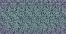
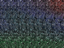
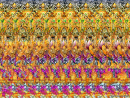
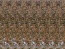
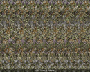
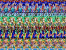

Teadvust mõjutav materjal
Stereogrammid






Info
Altered States of Consciousness
altered-states.net
Erinevad teadvuseseisundid
Sageduste nimekiri
Helikogud
Tehnikaid
9 meditatsiooni
Parema meeleolu meditatsioon
Shamaanitranss
Hingamistehnika I
Kundalini hingamistehnika
Tiibeti soojendav hingamistehnika
Eelmiste elude meenutamine
4 teadliku unenägemise tehnikat
30 astraalrännaku tehnikat
Hallutsinatsioonide nägemine
Aja "painutamine"